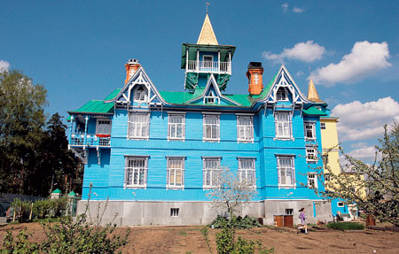
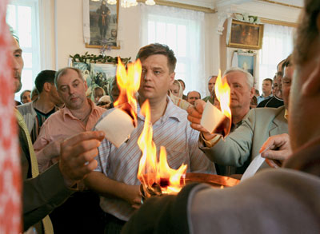
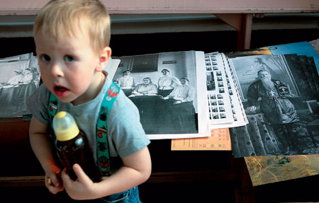
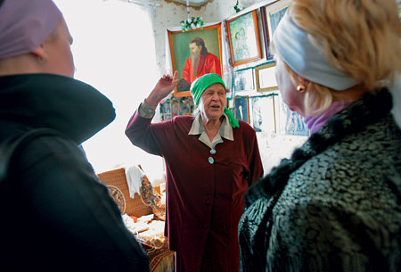
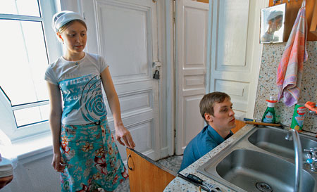
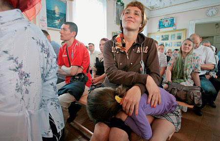
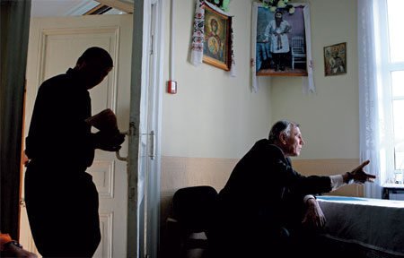
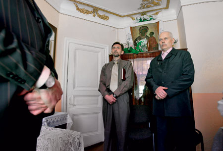
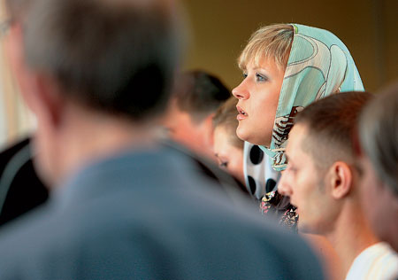
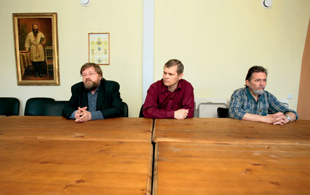

Заговор трезвыхДмитрий
Соколов-Митрич |
В нашей стране очень много людей, которые не пьют. Совсем НЕ ПЬЮТ, даже по праздникам. И
вообще никогда не пили. С самого рождения. И отцы их НЕ ПИЛИ, и деды. Некоторые НЕ ПЬЮТ уже в
пятом поколении. Трезвость для этих людей не просто норма жизни, а религиозный догмат. Секта
духовных христиан-трезвенников братца Иоанна Чурикова зародилась в России еще в конце XIX века.
Их никогда никто не любил: сначала они терпели гонения от царского правительства, потом от
советской власти. Зато теперь их учение быстро набирает популярность: общины
фанатиков-трезвенников существуют уже в 47 городах России. Их вера очень проста. Надо лишь
почаще повторять: «Братец наш дорогой Христос Иоанн Чуриков, спаси и отрезви!» И писать ему
записочки. И сжигать на алтаре. Первое, что приходит на ум при знакомстве с этими людьми, —
лучше бы они пили и курили! Но на самом деле все это совсем не смешно.
«Раз, два, три! Трезвомольцы мы!»«Как солнце, златыми лучами/ Свой путь озаряя земной,/ Явился Учитель меж нами,/ Братец Иоанн дорогой./ Он речью своей вдохновенной/ На подвиг Христов призывал,/ И пьянство, и ложь, и пороки/ В погибших людях обличал…» Ленинградская область, поселок Вырица. Большой старинный особняк голубого цвета на Павловском проспекте. Пошел уже третий час воскресного собрания. В зале человек 150, не меньше. Сначала пели обычные христианские молитвы и псалмы, потом перешли на песнопения, величающие братца. Затем начали выступать члены братского совета. Они уже объяснили новичкам, что православная церковь отошла от Христа с тех самых пор, как стала использовать для причастия вино. Что Иисус был назореем, поэтому ни капли в рот не брал, и что вообще Христос — это не тот, которого распяли. Христос — это Слово. Раньше оно пребывало в Иисусе, а теперь — в «нашем дорогом братце». А предтечей на этот раз был не кто иной, как Иоанн Кронштадтский. Почему? Потому что как-то раз он обронил такую фразу: «И тайный зритель Иоанн уже благовествует о новом небе и о новой земле». |
|  Особняк трезвомольцев в поселке Вырица |
 |
| Над головой у выступающих висит большой плакат: «113 лет Всенародной проповеди Господа
Братца Иоанна по отрезвлению народа. Это второе пришествие Христа!» После каждого выступления
люди встают и что-нибудь поют. Иногда это похоже на протестантские песнопения, иногда — на
хлыстовские духовные песни, иногда ухо отчетливо улавливает нотки коммунистического эпоса:
«Ваши руки, друзья!/ Мы — едина семья,/ Будем храбро до гроба бороться/ С тем жестоким врагом,/ Что все губит кругом,/ Что общественным пьянством зовется…» — За 2007 год к богу, к нашему дорогому братцу, обратился 1891 человек, — докладывает член братского совета Юрий Михайлович Иванов, человек худой, подтянутый, усатый и очень похожий на Бориса Грызлова. — А за истекший период года 2008?го число обратившихся к братцу уже перевалило за 600. Слово «обратившийся» в религиозной практике трезвенников звучит двусмысленно. Каждому заглянувшему на огонек чуриковцы настоятельно рекомендуют написать братцу записочку — то есть обратиться. Большинство пишет — значит, становится «обратившимся». Правда, многие не досиживают до конца первого же собрания, но это уже неважно. Вот и сейчас двое встали и ушли. Это папа Рафаэль с сыном-алкоголиком Славой. Они вообще-то мусульмане, но три часа назад управляющий вырицкой колонией трезвенников Александр Березин им объяснил: «Хочешь — говори “Господь Дорогой Братец”, хочешь — “Аллах Дорогой Братец”. Разницы нет никакой». — Я сам из города Сердобска Пензенской области, — рассказывает Березин, пшикая на себя одеколоном. — Был там главным бандитом, весь город в страхе держал, ну и пил, конечно. В тюрьме побывать успел. А когда познал братца нашего дорогого, то так изменился, что даже пришлось из города уехать — иначе люди бы неправильно поняли. С тех пор живу здесь, в Вырице, столице мировой трезвости. Уже одиннадцатый год. А вот Анна, познакомьтесь. |
|  Ребенок трезвых родителей на фоне архива секты. Справа на фотографии — ее основатель о. Иоанн Чуриков |  Активный участник просвещенния заблудших Анна Зорина |
| Старушка Анна Никаноровна Зорина пугает нас своим младенческим восторгом. Она все время как
бы слегка приплясывает, всплескивает руками и без конца поет: «Трезвость получили — горе все
забыли! Трезвость получили — горе все забыли!» Но если ее остановить, то можно услышать рассказ
о том, как раньше она гнала самогонку, губила людей, за то и страдала, а двадцать лет назад
пришла к трезвости — и теперь у нее все в порядке.
Недавно вот маму трамваем сбило, но все чуриковцы как следует помолились братцу — и мама воскресла. «Имя Братец, имя новое Твое,/ Имя Братец, имя чудное Твое,/ И кто имя это с верой призовет,/ Свою душу от погибели спасет./ Только вспомни, призови в тяжелый час,/ Братец всюду руку помощи подаст./ Призови Его в тяжелую беду,/ Он — Спаситель твой, Он тут как тут — придет». Пошел пятый час этих адских посиделок. Крыша уже слегка подрагивает. Словосочетание «братец дорогой» уже не кажется странным. Время от времени оно само всплывает в сознании. А тут еще «свидетели» пошли. Первый, второй, третий, четвертый… |
|  Члены секты — быший наркоман Женя и его жена Вероника |  Воскресное собрание трезвенников |
| — Благодарю бога живого, братца дорогого за шесть лет трезвой жизни, — дрожащим голосом
заводит трезвенник Женя. — Я с 15 лет был наркоманом. Всю свою жизнь врал, воровал и кололся. У
меня был СПИД, гепатит, пневмония, я ста метров не мог пройти, чтобы не присесть отдохнуть. Моя
мать в квартире решетки поставила: «Лучше я один раз тебя оплачу, как отца когда-то оплакала,
чем сходить с ума каждый день». Я шел сюда не за духовным, а за плотским. Надеялся здоровье
поправить. А мне тут просто сказали: «Сыночка, бросай наркотики. Вот братец — обратись к нему и
заживешь новой жизнью». И я обратился. Потом четыре года здесь в коммуне жил, трудился каждый
день, как вол, чтобы не думать о героине. А затем наш дорогой братец послал мне Веронику — мою
суженую. Мы венчались здесь же, в этом доме, в комнате братца. Она не побоялась выйти за меня —
спидоносца. Она сама не пила и не кололась — просто жить не хотела. А здесь мы оба нашли свое
счастье. И СПИДа у меня больше нет, и гепатита. Помолитесь обо мне братцу нашему дорогому.
Христос воскрес!
— Воистину воскрес! — отвечает зал. Этой перекличкой заканчивается каждое выступление трезвенников. «Раз, два, три!/ Трезвомольцы мы!/ Мы насмешек не боимся,/ С Братцем мы сильны!/ Давай, давай, трезвися,/ Пора нам трезвыми быть!/ К Богу обратиться/ И ближнего любить». Самого главного трезвомольца зовут Вячеслав Казачков. Он работает главным инженером какого-то крупного предприятия, но какого — не говорит. Вообще здесь любят намекать, что среди трезвенников есть очень влиятельные люди, а вот Сергей Бодров подготовил когда-то для «Взгляда» нехороший репортаж о них — и вы знаете, что с ним потом случилось. После такого бодрого начала Вячеслав Иванович приглашает нас прямо сейчас поехать с ним в райцентр Сямжа Вологодской области. Казачков утверждает, что с тех пор, как трезвенники-чуриковцы начали там свою проповедь, в поселке все как один бросили пить. «Там теперь даже должность районного нарколога упраздняется, потому что он остался без работы!» — убеждает меня предводитель трезвомольцев. От путешествия мы вежливо отказались, но в Сямжу я все-таки позвонил. На том конце провода долго смеялись: «Трезвенники? Человек пятьдесят, не больше. И те потихоньку обратно спиваются». «Сказал нам Братец: “Кто отрезвился,/ В том человеке Христос родился!”/ Вот голос Братец свой возвышает,/ Всех к трезвой жизни он призывает…» Самого Иоанна Чурикова, кстати, можно увидеть здесь же, в зале собраний. Его огромная фотография висит строго по центру. Мощная черная борода, высокие сапоги, рубаха, затянутая толстым поясом, на животе — большой крест. А глаза такие добрые-добрые. Братец и шесть сестрицПосле пятичасового бдения в Вырице трудно поверить, что сам Иван Алексеевич Чуриков (1861–1933) никогда себя Иисусом Христом ни в каком пришествии не называл, а к Русской православной церкви всегда относился лояльно. Жизнь легендарного братца — это типичная история о том, как человека сделали Христом против его воли. Крестьянин Иван Чуриков родился и вырос в Самарской губернии. Долгое время занимался рыбной и мясной торговлей. В 30?летнем возрасте после умопомешательства жены и целого ряда крупных неудач в бизнесе Чуриков пережил духовный переворот. Тяжкие испытания он воспринял как призыв к служению богу. По евангельской заповеди он продал все свое имущество, раздал деньги нищим, зашил карманы и с одним Евангелием в руке и крестом на шее пришел в 1894 году в Санкт-Петербург. Первым пристанищем вольного миссионера и местом его проповеди стали ночлежные дома на Лиговке, а первыми слушателями — пьяницы, безработные, воры, проститутки, разбойники, нищие, сироты, калеки и прочие «бывшие люди». Захват аудитории порой выглядел так: Чуриков залезал под свои нары и начинал там что-то бубнить, интригуя присутствующих. «Ты чего там в угол забился? — недоумевали лиговские бичи. — Ну-ка вылезай. Чего сказать-то хотел?!» Авторитет среди петербургских низов он завоевал простотой своих речей и аскетическим образом жизни. Подрабатывая на самых грязных работах, Чуриков весь свой заработок раздавал соседям по ночлежке. Постепенно о нем заговорили по всему городу. Личностью самарского проповедника заинтересовались журналисты и представители прогрессивной интеллигенции. О нем писали Михаил Пришвин и Дмитрий Философов. Вскоре не осталось ни одного серьезного издания, которое не опубликовало бы репортаж о «лиговском старце», причем за редким исключением тон публикаций был вполне благожелательный. Число последователей братца Иоанна стало стремительно расти. Сохранились фотографии, на которых видно, что очередь к его дому, расположенному неподалеку от железнодорожной станции Обухово, тянулась на многие сотни метров. Справляться с такой уймой народа братцу помогали шесть молодых «сестриц», что не раз использовали в своих целях его противники. Сам же Чуриков объяснял, что, специально давая пищу для кривотолков, он борется с гордыней. Никакого особого рецепта отрезвления Чуриков не предлагал. Он просто проповедовал Евангелие и призывал людей бросать пить. И каким-то чудом ему удавалось добиться неплохих результатов. Армия его последователей вскоре измерялась уже десятками тысяч. А ласковое прозвище «братец» закрепилось за Чуриковым благодаря его самарским корням, где в ту пору было в ходу такое обращение. Конфликт с Русской православной церковью, который возник вскоре после того, как движение чуриковцев получило известность, до сих пор является предметом споров среди исследователей. Одни считают, что это противостояние стало результатом серии недоразумений. По мнению других, недовольство духовенства носило принципиальный характер и имело под собой серьезные основания. Так или иначе, благодаря вмешательству церковных иерархов Чуриков сперва три месяца провел на обследовании в психушке, где выяснилось, что он абсолютно здоров, потом был на время заточен в суздальский Спасо-Ефимиев монастырь, а затем отлучен от причастия. Ему было запрещено лично принимать посетителей, но он продолжал общаться с людьми посредством записочек. В ответ на просьбы об исцелении от пьянства он передавал кусочек сахара как символ новой, сладкой жизни и пузырек с маслицем. Эта традиция среди его последователей сохранилась до сих пор. Почитатели Чурикова и раньше-то относились к своему учителю с благоговением, а после обрушившихся на него церковных гонений стали его откровенно обожествлять. Нет никаких сведений о том, что сам Чуриков открыто объявлял о своей «божественной сущности», но не заметно и того, чтобы он прилагал усилия по искоренению этого заблуждения. В 1905 году в дачном поселке Вырица появилась основанная им община трезвенников. При советской власти, которая поначалу снисходительно относилась к сектам, сельскохозяйственная коммуна «БИЧ» («Братство Иоанна Чурикова»), в которую преобразовалась вырицкая община, процветала и демонстрировала образцы коммунистического труда. Проблемы у трезвенников начались в конце 20?х годов, когда советская власть, расправившись с Русской православной церковью, взялась за более мелкие религиозные организации. Кроме того, в 1925 году был отменен сухой закон, введенный еще при Николае II. Государство рассчитывало получать от продажи спиртного неплохие доходы. И деятельность «БИЧ» по отрезвлению населения была признана контрреволюционной. Сам братец в 1929 году был арестован и сгинул где-то в 30?е годы. Его последователи заплатили за свою «святую трезвость» кто жизнью, кто свободой. Вплоть до перестройки движение жило подпольной жизнью. А получив, наконец, легальный статус, чуриковцы тут же переругались и раскололись на два течения: ортодоксов, обосновавшихся в Вырице, и питерских «умеренных», получивших приют сначала в стенах ДК Первой пятилетки, а затем при храме Феодоровской иконы Божьей матери. На этот раз Санкт-Петербургская епархия оказалась более толерантной, чем век назад. Да и те чуриковцы, которым дали приют при храме, — не те, что в Вырице: они считают своего братца не богом, а всего лишь святым. |
|  Предводитель вырицких трезвомольцев Вячеслав Казачков |  Трезвомольцы после службы. Справа — член братского совета Юрий Иванов |
Между сухим запоем и мокрымМы считаем, что канонизация Ивана Чурикова — это всего лишь вопрос времени, — говорит человек с бородой. Предводитель умеренных чуриковцев Владимир Глисский — один из тех самых людей, которые вообще НЕ ПЬЮТ. И Алексей Шустряков — из них же. Но таких здесь все-таки немного. Большинство приходит сюда спасаться. По воскресеньям после литургии при храме собирается человек двести, но этого шоу мы уже наелись в Вырице, поэтому к питерским трезвенникам пришли в понедельник. Пробую заговорить с этими пожизненными трезвенниками и вдруг понимаю, что оба они — немножко инопланетяне. Например, я их долго пытаю: чем принципиально отличается человек мало пьющий от совсем непьющего, и вдруг понимаю: а им-то откуда знать? Они ведь в жизни ни капли спиртного в рот не взяли. Мы с фотографом Сергеем Покровским переглядываемся. В наших глазах ужас. |
|  Лица у отказавшихся от алкоголя — светлые и чистые |  |
| — Человек совсем непьющий живет здесь и сейчас, — приходит на выручку товарищам Виктор
Назенцев. — А человек иногда выпивающий всю жизнь питается иллюзией, что есть какие-то другие
условия, в которых он может решить все свои проблемы. Когда этот человек пьян, он думает: «Вот
протрезвею — и все наладится». А когда он трезв, думает: «Вот выпью — и все встанет на свои
места». Так всю жизнь и ныряет из одного состояния в другое, а на самом деле просто убегает от
себя самого.
Виктор знает, что говорит. У него, в отличие от Шустрякова с Глисским, опыт есть. Назенцев — бывший летчик. Обет трезвости дал в 1991 году. Теперь вот сын его тоже записался в трезвенники. Налицо нарождающаяся династия. — У нас тут целая клановая система, — смеется Глисский. — Один человек бросил пить — за ним потихоньку трезвеют его родственники, потом друзья, потом друзья друзей и так далее. В конце концов выстраивается новая система родства: не по крови — кто кого родил, а по принципу перерождения — кто кого отрезвил. — Это, наверное, как у пьяниц: с кем пьешь — тот тебе и отец, и брат. — Мне трудно судить, — разводит руками Глисский и снова становится инопланетянином. — Я же не пил никогда. Но, наверное, так оно и есть. В отличие от ортодоксов, молитвенный зал которых полон всевозможных украшений и наглядной агитации, штаб умеренных чуриковцев удивляет голой белизной стен. В облике моих собеседников тоже какая-то стерильность, непривычная глазу. Все они выглядят лет на десять моложе паспортного возраста. У них чистые лица, без красноты, без алкогольного целлюлита. За время нашего разговора никто ни разу не ругнулся. Те, в Вырице, вели себя так же, но с каким-то надрывом. А эти — абсолютно спокойные люди, веселые, добродушные. На втором часу нашей беседы я поймал себя на ощущении, что мы не просто разговариваем, а «хорошо сидим». — Я вот раньше трезвенников видел только закодированных, — признался я инопланетянам. — И знаете, они мне не нравились. Злые какие-то. И еще очень жадные. — Это бывает, — кивнул пожарный. — Мы когда еще в ДК Первой пятилетки обитали, там такой случай был. Директор клуба совсем измучилась со своими электриками-сантехниками, которые у нее не просыхали. Вызвала какого-то врача-шамана и сделала из них «торпедоносцев». Через месяц приходит к шаману, чуть не плачет: «Раскодируй ты их, бога ради!» — «Что такое?!» — «Злые стали, как собаки. Чего ни попросишь — огрызаются. Лишний раз пальцем пошевелить — денег требуют. Пусть лучше пьют». — А вы вот тоже трезвые, а вроде нормальные. Почему так? — У нас есть такое понятие: «сухой запой». Когда человека насильно отрезвили и отправили на все четыре стороны, он, как правило, в него впадает. Потому что так нельзя. Сладкое отобрали, а взамен ничего не дали. Разозлишься тут! Да и недолго такие держатся. Год, максимум два — и снова впадают в запой. В обычный. — А среди чуриковцев срывы бывают? Не у вас — пожизненников, а у тех, кто пришел спасаться? — Конечно, бывают! Как же без срывов? Я даже сразу могу определить, кто сорвется. Когда новенький приходит, я его спрашиваю: «Можешь сам бросить?» Если отвечает «Могу» — значит, дохлый номер. А если плачет, волосы на себе рвет, перед иконами стоит и кричит: «Помогите!» — тут еще есть надежда. Вот недавно один сорвался после двадцатилетней завязки. Так запил, что только искры летят. Мы к нему домой пришли, стали вздыхать: мол, как же ты так! А он еле языком ворочает, мычит что-то про волка и флажки. А начал с джин-тоника. Но все-таки число трезвенников заметно растет. С 1990 года наших стало раз в пять больше. Но, если честно, вырицкие растут быстрее. — Почему? — По той же причине, почему их сторонники раньше водку предпочитали воде. Они просто променяли одну дурь на другую. А у нас надо во всех смыслах на воду переходить. Кому это понравится? — Вообще быть трезвым очень нелегко. Иногда чувствуешь себя каким-то заговорщиком. Как будто у тебя в кармане есть ядерная кнопка, а никто об этом не знает. Вы думаете, для чего я состою в обществе трезвенников? Зачем оно мне, если я и так никогда не пил и потребности не испытываю? — Действительно — зачем? — Да чтоб себя нормальным человеком чувствовать! Иначе просто можно дойти до психоза. Приходишь накануне праздника на работу, у людей уже стол накрыт, и вдруг все начинают кряхтеть и напрягаться, как будто ты их застал без трусов. — Интересно, а как вы отвечаете на извечный пьяный вопрос «Ты меня уважаешь»? — Я тогда успокаиваю моих пьяных братьев словами основоположника трезвеннического движения в России Сергея Рачинского: «Трезвость — это не добродетель. Трезвость — это всего лишь отсутствие порока». То есть я ничуть не лучше вас, успокойтесь и пейте на здоровье. Хотя, если честно, ядерная кнопка в кармане действительно имеется. Только не у меня, а у тех, кто пьет. Даже умеренно. И они ее нажимают каждый раз, когда берутся за рюмку. В те времена, когда братец бил тревогу, Россия потребляла 1 литр чистого спирта на человека в год. Сегодня — 25 литров. Это в пять раз больше, чем нужно для того, чтобы запустить необратимые разрушительные процессы. Мы — вымирающая нация, живущая в государстве, которое обречено на вечную бедность. Но чтобы понять это, нужно протрезветь, а никто не хочет. А нам с этой мыслью жить приходится. Вечером мы с фотографом Покровским пошли в магазин. Не знаю, как у Сереги, а меня еще за сто метров до входа в него начала терзать мысль: купить или не купить? В магазине мы узнали, что в Питере после 22 часов бухло не продают. Не знаю, как Серега, а я вздохнул с облегчением. «Известия», для «РР» Фотографии: Сергей Покровский для «РР» |
| Комментарий Сергея Плотникова: К сожалению, то ли Дмитрий инопланетян не любит, то ли его целью стояло высмеять трезвость, но мне это очень напоминает статьи 20-х годов о Чурикове. Контекст примерно такой же. Когда советские корабли бороздят пространство.....некоторые трезвятся... Подтверждением того, что автор не разобрался в ситуации служит неверная фамилия председателя общины православных трезвенников В.Н. Глинского. А если говорить по сути, то побывав на нашей беседе (я имею ввиду собрание в Храме Феодоровской иконы) возможно автор получил бы другие впечатления. Действительно община трезвенников разделилась и об этом на нашем сайте www.trezvograd.ru написано. Но в статье не прозвучало, что "умеренные" трезвенники это ПРАВОСЛАВНЫЕ ХРИСТИАНЕ (в отличие от вырицких). Конечно нас такая реклама не пугает, скорее наоборот, ведь для пьющих людей приход в общину бывает той соломенкой, которая помогает им стать людьми. И не просто, а людьми верующими, христианами. И самое главное: называть человека (пусть даже чудотворца) Богом это грех. И если трезвость ставится во главу угла и заслоняет покаяние в других грехах и отводит от спасения - это тоже не есть хорошо. Настоятель нашего храма о. Александр Сорокин прежде чем разрешить нам беседы в Храме досконально разобрался в ситуации, более того, он сам часто бывает и выступает на наших беседах. У нашей общины нет своего вероучения, мы руководствуемся учением РПЦ. Это в статье не прозвучало..... Конечно хотелось бы, чтобы такое серьезное издание писало больше правды чем наоборот С уважением, православный трезвенник, член общины трезвенников Б.И. Чурикова при Храме Феодоровской иконы Сергей Плотников |